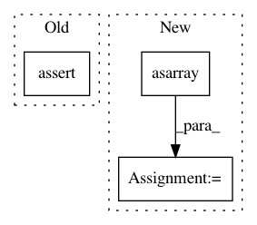

b95fcf7f52aca8ad0b1afb3cfc64c8eed534fafe,tests/keras/backend/backend_test.py,TestBackend,test_nn_operations,#TestBackend#,783
Before Change
z_list.append(k.eval(k.dropout(x, level=0.2)))
for i in range(len(z_list) - 1):
assert z_list[i].shape == z_list[i + 1].shape
// dropout patterns are different, only check mean
assert np.abs(z_list[i].mean() - z_list[i + 1].mean()) < 0.05
check_two_tensor_operation("binary_crossentropy", (4, 2), (4, 2), BACKENDS, from_logits=True)
After Change
check_two_tensor_operation("categorical_crossentropy", (4, 2), (4, 2), [KTH, KTF], from_logits=True)
xval = np.asarray([[0.26157712, 0.0432167], [-0.43380741, 0.30559841],
[0.20225059, -0.38956559], [-0.13805378, 0.08506755]], dtype=np.float32)
yval = np.asarray([[0.46221867, 0.53778133], [0.51228984, 0.48771016],
[0.64916514, 0.35083486], [0.47028078, 0.52971922]], dtype=np.float32)
check_two_tensor_operation("categorical_crossentropy", xval, yval,
BACKENDS, cntk_two_dynamicity=True, from_logits=True)
check_two_tensor_operation("binary_crossentropy", (4, 2), (4, 2), BACKENDS, from_logits=False)
check_two_tensor_operation("categorical_crossentropy", (4, 2), (4, 2), BACKENDS, from_logits=False)
In pattern: SUPERPATTERN
Frequency: 3
Non-data size: 3
Instances
Project Name: keras-team/keras
Commit Name: b95fcf7f52aca8ad0b1afb3cfc64c8eed534fafe
Time: 2017-07-29
Author: me@taehoonlee.com
File Name: tests/keras/backend/backend_test.py
Class Name: TestBackend
Method Name: test_nn_operations
Project Name: NifTK/NiftyNet
Commit Name: ebbc9fc0fc52a650ebd5bbbd954733bada35672e
Time: 2017-08-08
Author: wenqi.li@ucl.ac.uk
File Name: niftynet/layer/histogram_normalisation.py
Class Name: HistogramNormalisationLayer
Method Name: layer_op
Project Name: chainer/chainercv
Commit Name: b60331fa4ed1fb209e738655edfd6da04bba1e62
Time: 2017-08-07
Author: Hakuyume@users.noreply.github.com
File Name: tests/utils_tests/image_tests/test_write_image.py
Class Name: TestWriteImage
Method Name: test_write_image